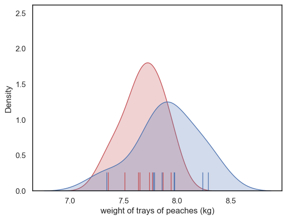
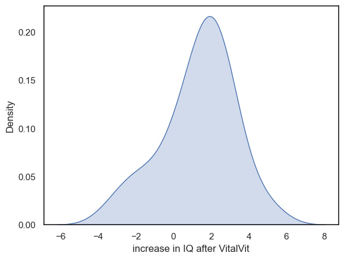
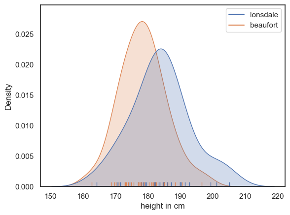

Tutorial Exercises: \(t\)-test#
Here are some exercises on comparing means using the t-test
Set up Python libraries#
As usual, run the code cell below to import the relevant Python libraries
# Set-up Python libraries - you need to run this but you don't need to change it
import numpy as np
import matplotlib.pyplot as plt
import scipy.stats as stats
import pandas as pd
import seaborn as sns
sns.set_theme(style='white')
import statsmodels.api as sm
import statsmodels.formula.api as smf
import warnings
warnings.simplefilter('ignore', category=FutureWarning)
1. Whose peaches are heavier?#

As last week:
Mr Robinson’s juice factory buys peaches from farmers by the tray. Each tray contains 50 peaches. Farmer MacDonald claims that this is unfair as his peaches are juicier and therefore weigh more than the peaches of his rival, Mr McGregor.
Mr Robinson weighs eight trays of Farmer McDonald’s peaches and 8 trays of Mr McGregor’s peaches. The weights, in kilograms are given in the file peaches.csv
Investigate whether MacDonald’s claim is justified by testing for a difference in weight between MacDonald and McGregor’s peaches. Use both a parametric and non-parametric test.
a) Load the data into a Pandas dataframe
peaches = pd.read_csv('https://raw.githubusercontent.com/jillxoreilly/StatsCourseBook_resources/main/data/peaches.csv')
peaches
| McGregor | MacDonald | |
|---|---|---|
| 0 | 7.867 | 8.289 |
| 1 | 7.637 | 7.972 |
| 2 | 7.652 | 8.237 |
| 3 | 7.772 | 7.789 |
| 4 | 7.510 | 7.345 |
| 5 | 7.743 | 7.861 |
| 6 | 7.356 | 7.779 |
| 7 | 7.944 | 7.974 |
b) Plot the data and comment on whether they are noramlly distributed.
A KDE plot (to show the distribution) and rug plot (to show individual data points) would be a good choice here. You should comment on whether the data appear to be Normally distriubted and hence the suitability of the t-test.
# your code here to plot the data
sns.kdeplot(data=peaches.McGregor, color='r', fill=True)
sns.rugplot(x=peaches.McGregor, color='r', height=0.1)
sns.kdeplot(data=peaches.MacDonald, color='b', fill=True)
sns.rugplot(x=peaches.MacDonald, color='b', height=0.1)
plt.xlabel('weight of trays of peaches (kg)')
plt.show()

d) We can assume (based on the Central Limit Theorem) that these data points are normally distributed. Explain why.
Each tray contains 50 peaches. The weight of the total tray is 50x the weight of the mean peach in the tray. But the mean of a large sample (n=50) is normally distributed, according to the Central Limit Theorem. So the total weight, as 50x the mean weight, should also be normally distributed.
e) Conduct a t-test to test Farmer MacDonald’s claim
State your hypotheses
State relevant descriptive statistics
Carry out the test using the built in function from
scipy.statswith appropriate option choicesState your conclusions
Hypotheses:
Ho: The mean weight of trays of peaches is the same for Farmer MacDonald and Farmer McGregor’s farms
Ha: The mean weight is higher for Farmer McDonald’s farm
We will test at the 5% alpha level, one-tailed.
Notes
In this case, we are testing for a difference of means not medians, since the maths of the t-test concerns variability in the sample mean
Descriptive Statistics
We need to report the mean, sample size, and a measure of spread for each group. Here we can use df.agg() to get the mean and standard deviation.
peaches.agg({'McGregor':['mean', 'std', 'count'], 'MacDonald':['mean', 'std', 'count']})
| McGregor | MacDonald | |
|---|---|---|
| mean | 7.685125 | 7.905750 |
| std | 0.190262 | 0.295633 |
| count | 8.000000 | 8.000000 |
Farmer MacDonald’s trays of peaches (n=8, mean = 7.91kg, sd=0.30) are slightly heavier than Farmer McGregor’s (n=8, mean = 7.70kg, sd=0.19)
Carry out the test
Note that you must choose the correct option for alternative
stats.ttest_ind(peaches.MacDonald, peaches.McGregor, alternative='greater')
Ttest_indResult(statistic=1.7749776811588107, pvalue=0.04881876713074563)
As the p-value is (just!) less than the chosen alpha value (0.05), we reject the null hypothesis.
Conclusions
The trays of peaches from Farmer MacDonald are heavier
f) Look back at the rank-based and permutation tests we carried out on the same data in the previous section. How do the results of the three tests differ? Which test was the best choice, and why?
All three tests gave a significant difference such that Farmer MacDonald’s peaches were heavier, but the p-value varied slightly. As it happens the rank-based test has the ‘most significant’ p value even though this is the least sensitive test.
All three tests are appropriate as the assumptions for all three tests are met. I woudl choose the t-test as it is theoretically the most sensitive, given that that the criteria are indeed met.
What you should not do in your own research is try all the available tests and pick the one with the lowest p-value
2. IQ and vitamins#

The VitalVit company claim that after taking their VitalVit supplement, IQ is increased.
They run a trial in which 22 participants complete a baseline IQ test, then take VitalVit for six weeks, then complete another IQ test.
a) Load the data into a Pandas dataframe
vitamin = pd.read_csv('https://raw.githubusercontent.com/jillxoreilly/StatsCourseBook_resources/main/data/vitalVit.csv')
vitamin
| ID_code | before | after | |
|---|---|---|---|
| 0 | 688870 | 82.596 | 83.437 |
| 1 | 723650 | 117.200 | 119.810 |
| 2 | 445960 | 85.861 | 83.976 |
| 3 | 708780 | 125.640 | 127.680 |
| 4 | 109960 | 96.751 | 99.103 |
| 5 | 968530 | 105.680 | 106.890 |
| 6 | 164930 | 142.410 | 145.550 |
| 7 | 744410 | 109.650 | 109.320 |
| 8 | 499380 | 128.210 | 125.110 |
| 9 | 290560 | 84.773 | 87.249 |
| 10 | 780690 | 110.470 | 112.650 |
| 11 | 660820 | 100.870 | 99.074 |
| 12 | 758780 | 94.117 | 95.951 |
| 13 | 363320 | 96.952 | 96.801 |
| 14 | 638840 | 86.280 | 87.669 |
| 15 | 483930 | 89.413 | 94.379 |
| 16 | 102800 | 85.283 | 88.316 |
| 17 | 581620 | 94.477 | 96.300 |
| 18 | 754980 | 90.649 | 94.158 |
| 19 | 268960 | 103.190 | 104.300 |
| 20 | 314040 | 92.880 | 94.556 |
| 21 | 324960 | 97.843 | 97.969 |
b) The requirement for a paired t-test is that the pairwise differences in scores are normally distributed. Plot the data in such a way as to check this assumption. Comment on your plot.
A KDE plot of the pairwise differences, after-before, would be a good choice here
vitamin['change']=vitamin.after-vitamin.before
sns.kdeplot(data=vitamin.change, fill=True)
plt.xlabel('increase in IQ after VitalVit')
plt.show()

The change in IQ could be normally distributed - it is unimodal and fairly symmetrical, although with neagutive skew and heavy tails
There seem to be more people showing positive than negative changes
In real IQ tests, IQ scores are normally distributed by design (the tests are designed to yeild a normal distribution of scores). Therefore we should be able to use a t-test to compare the scores from before and after taking VitalVit.
c) Conduct a t-test to test VitalVit’s claim
State your hypotheses
State relevant descriptive statistics
Carry out the test using the biilt in function from scipy.stats with appropriate option choices
State your conclusions
Hypotheses:
Ho: The mean change in IQ after taking VitalVit is zero
Ha: The mean change in IQ is positive
We will test at the 5% alpha level, one-tailed.
Notes
The hypotheses concern the mean change in IQ as the maths of the t-test concerns variation in the mean
We are testing the mean change in IQ (within subjects) rather than the difference of means (between the before- and after- datasets) as this is a paired test.
The alternative hypothesis is directional as VitalVit is supposed to increase IQ, not decrease it. This means we need to choose a one-tailed test and choose the correct value of
alternativewhen we run the test
Descriptive Statistics
We need to report the mean difference, sample size (number of pairs), and a measure of spread for the differences (sd).
I would advise also reporting these statistics for each session (before/after) as this gives the reader a fuller picture of the data (are the changes in IQ score within individuals large, compared to the variation between individuals)
vitamin.agg({'before':['mean', 'std', 'count'], 'after':['mean', 'std', 'count'] , 'change':['mean', 'std', 'count']})
| before | after | change | |
|---|---|---|---|
| mean | 100.963409 | 102.284000 | 1.320591 |
| std | 15.815174 | 15.714324 | 1.907622 |
| count | 22.000000 | 22.000000 | 22.000000 |
The mean change in IQ is positive (n=22, mean(after-before) = 1.32, sd=1.91). The change is small compared to the mean value for IQ in each group (before: mean=101.0, sd=15.8. after: mean = 102.3, sd=15.7)
Carry out the test
Note that you must choose the correct option for alternative, bearing in mind that the order in which you input the data also matters.
stats.ttest_rel(vitamin.after, vitamin.before, alternative='greater')
TtestResult(statistic=3.247037547947646, pvalue=0.0019289530228459733, df=21)
As the p-value is less than the chosen alpha value (0.05), we reject the null hypothesis.
Conclusions
VitalVit does indeed increase IQ
f) Look back to the rank-based and permutation tests on the same data, which you carried out last week. How do the results differ? Why test was the best choice, and why?
All three tests find a significant increase in IQ after taking VitalVit.
In this case the t-test had the ‘most significant’ p-value
Since we know the t-test should be the most sensitive (as its assumptions are fulfilled, this is probably the one we should ave chosen in the first place
3. Who has the tallest students?#
A student from Lonsdale college claims that Lonsdale students are taller than students from Beaufort college.
Heights of 30 randomly selected male undergraduates from each college are found in the file heightsCollege.csv
Test the student’s hypothesis using a t-test (this is justified as heights are generally normally distributed) and write up your report as if for a scientific publication. Your report should include the following elements:
A plot of the data to show the data distribution
The relevant descriptive statistics
The results of the t-test
A conclusion
You can use the write-up sections of the t-test example notebooks as a model
# Load the data
heights = pd.read_csv('https://raw.githubusercontent.com/jillxoreilly/StatsCourseBook_resources/main/data/heightsCollege.csv')
Heights were recorded for 30 male undergraduates in each of two Oxford colleges (Lonsdale and Beaufort)
The data within each college have a unimodal and roughly symmetrical distribution consistent with the expected Normal distribution for height. There are three very tall students at Lonsdale creating a heavy positive tail in that distribution:
sns.kdeplot(heights, fill=True)
sns.rugplot(heights)
plt.xlabel('height in cm')
plt.show()

Descriptive Statistics
heights.agg({'lonsdale':['mean', 'std', 'count'], 'beaufort':['mean', 'std', 'count']})
| lonsdale | beaufort | |
|---|---|---|
| mean | 183.863667 | 178.440000 |
| std | 9.099884 | 7.066874 |
| count | 30.000000 | 30.000000 |
The mean height is greater at Lonsdale (mean = 183.9cm, sd=9.09) than Beaufort (mean = 178.4cm, sd=7.07)
We carried out an independent samples t-test …
stats.ttest_ind(heights.lonsdale, heights.beaufort, alternative='two-sided')
Ttest_indResult(statistic=2.5783308721106657, pvalue=0.012488916322958012)
… which showed a significant difference in height between the colleges (t(58) = 2.58, p=0.012, two-tailed) at the 5% level.
We conclude that there is indeed a significant difference in mean height between colleges, with men at Lonsdale being taller.